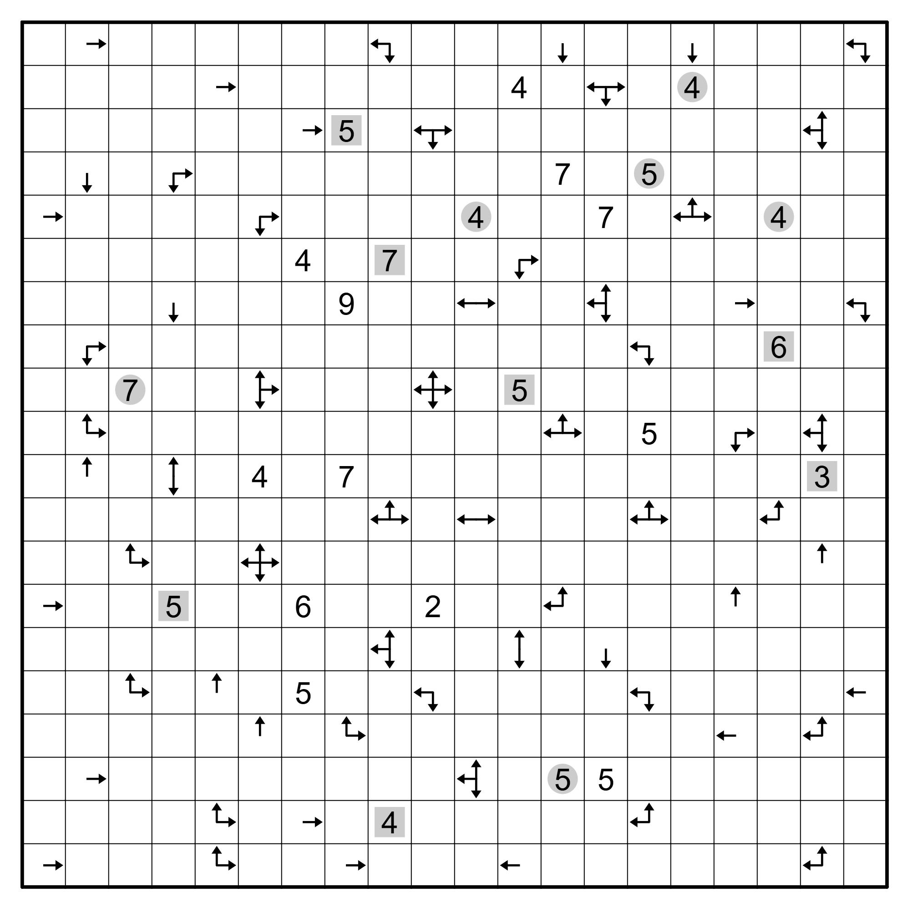
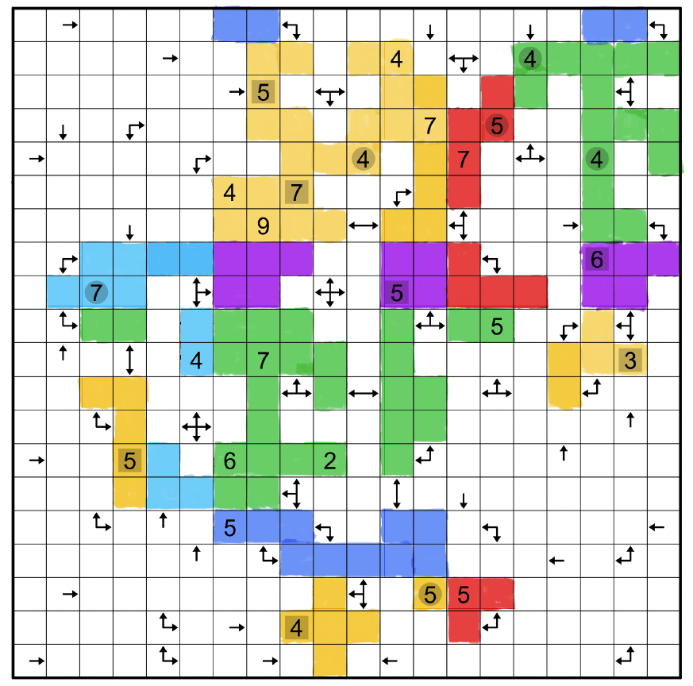
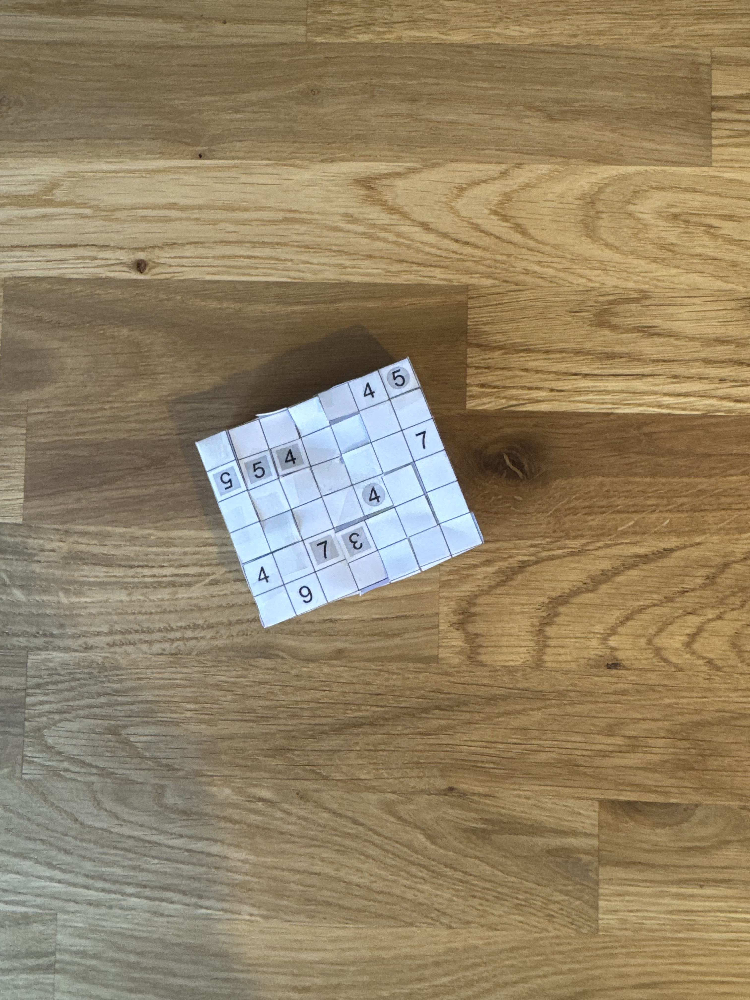

Solving Jane Street's November Puzzle
The Problem
Read the full problem description here (Jane Street's website).

Figure 1: The original puzzle statement
The basic rules are as follows
- All squares with a number inside must be in the final rectangle
- All squares with arrows inside are not in the final rectangle
- All squares in the final rectangle must be connected orthogonally
- All squares you remove must be connected orthogonally and have at least one connection to the edge of the grid
- The squares with numbers state how many squares around them are in the final rectangle
- The squares with arrows point to the nearest square within that row or column
- The final solution is the product of the sum of all the numbers of the different faces on the rectangle
Let's elaborate on two of those points.
First, let's take the number 9, this means that every square around it (including itself) must be present in the final rectangle. The same applies for the number 5 (excluding itself) only 4 other squares can be in the final rectangle.
Second, we know one immmediate thing about the squares orthogonal to one with an arrow in it. If the arrow points only to the right (→) as an example, we know that the immediate squares upwards (↑), below (↓), and left (←) are not in the final rectangle and can rule them out. We can extrapolate this rule. If we stick with the previous example where the arrow points to the right (→), if the closest cell ends up being 3 squares away, (→ _ _ _ 6), then we know that upwards, below, and the left we must have 4 empty squares which are not in the box. We can use these rules to eliminate large parts of the grid.
Note:
They mention that the numbers surrounded by squares must be orthogonal to one another, and that numbers surrounded by a grey circle must be on opposite faces of the final rectangle. These rules/clues were not helpful for me during the initial stages of solving the puzzle. Really were not that helpful until I was double checking my solution.
Furthermore, there are ambiguous squares, in other words, they are not eliminated by number squares or arrow squares.
Method
- Start eliminating as much of the grid as you can
- Combine the elimination with using the numbers to eliminate further squares and determine which squares remain (Figure 2)
- If you have good spatial awareness you can calculate the final solution already, otherwise use paper version to cut out the shape (Figure 3)
- Try and combine the shape into the final rectangle (Figure 4)
- Use your beautiful rectangle to calculate the final solution

Figure 2: The original puzzle statement

Figure 3: The grid with squares part of the final rectangle

Figure 4: The final rectangle
Final Answer
The final solution is calculated by calculating the product of the sum of the values on each rectangle face.
4 + 5 + 7 + 4 + 4 + 7 + 9 + 3 + 5 + 5 + 4 = 57 (Yellow face)
4 + 4 + 5 + 7 + 6 + 2 = 28 (Green face)
5 + 7 + 5 = 17 (Red face)
6 + 5 = 11 (Purple face)
7 + 4 = 11 (Light blue face)
5 = 5 (Dark blue face)
57 * 28 * 17 * 11 * 11 * 5 = 16,414,860
The solution is: 16,414,860